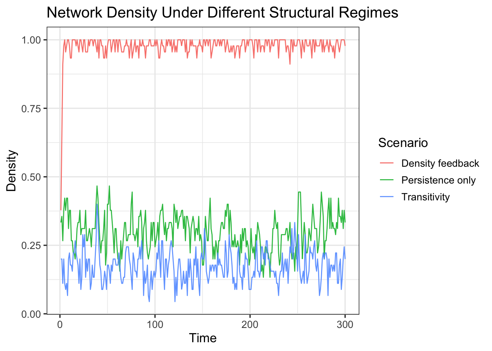
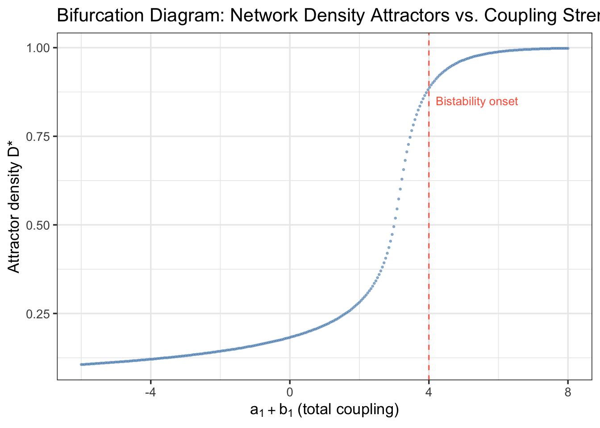
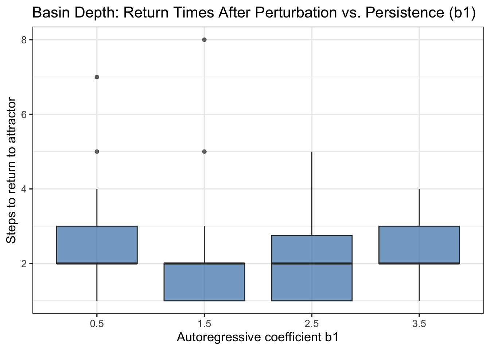
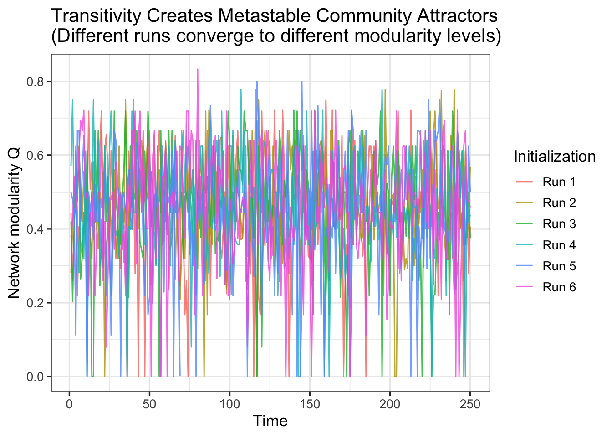
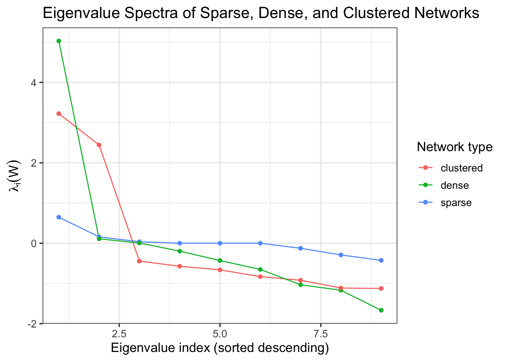
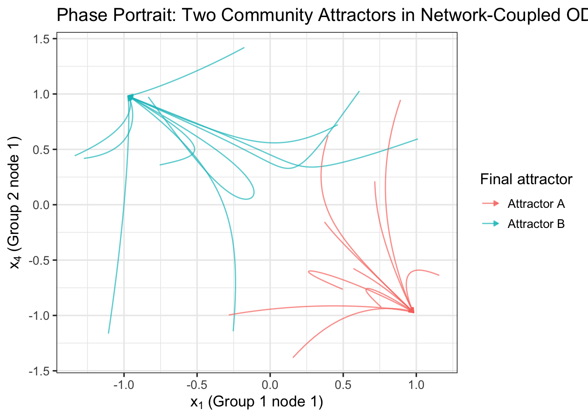
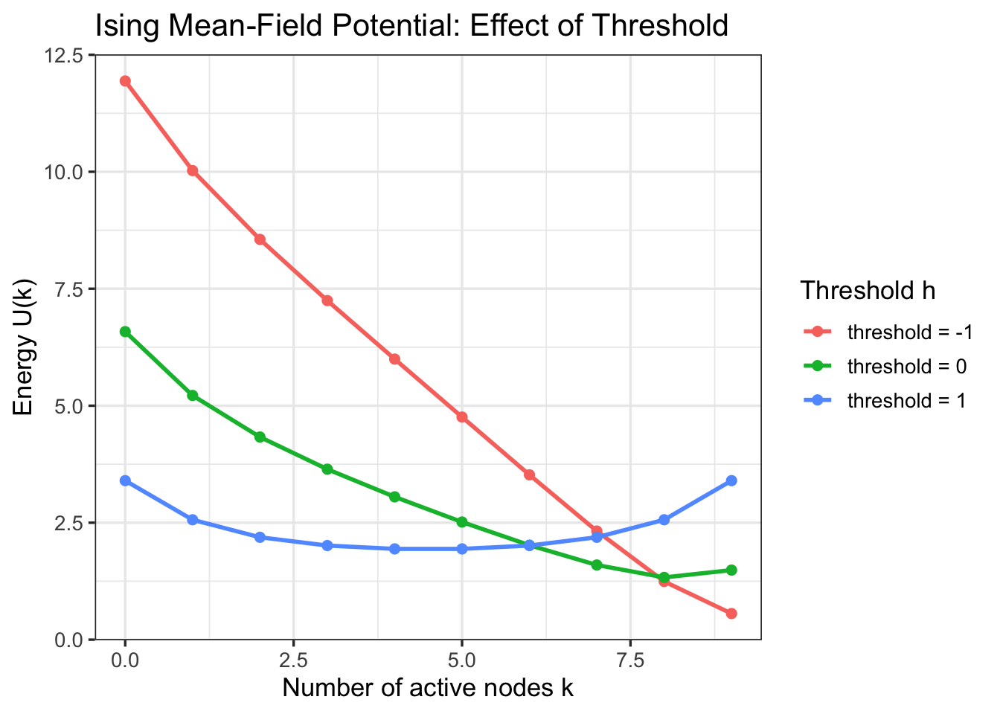

Chapter 16 From Network Structure to Attractors: How Density, Autoregression, and Transitivity Shape Basins of Attraction in Complex Dynamical Systems
Abstract. This article develops a unified theoretical account of how three structural properties of a network — global density, edge-level autoregressive persistence, and local transitivity — jointly determine the transition probabilities of a dynamical system, and how those probabilities shape the geometry of attractors and basins of attraction. We move from discrete Markov chains on network state spaces, through continuous-time ordinary differential equations, to potential landscapes, providing mathematical formalism, a worked example model, and complete R code for each section.
16.1 1. The Fundamental Chain of Causation
The central argument of this article can be stated in one sentence before being unpacked: network structural features determine transition probabilities; those probabilities define a Markov chain or flow on a state space; and that flow, through its long-run geometry, determines attractors, basin volumes, and transition rates between metastable regions. Each term in this chain has a formal meaning, and the connections between them are not metaphorical but mathematically precise. Understanding them requires beginning with what a state space is for a networked system and how transitions across it are governed.12
A dynamical network with \(N\) nodes has a state \(\mathbf{x}_t\) that lives in some space \(\mathcal{X}\). For binary networks, \(\mathbf{x}_t \in \{0,1\}^N\) and \(|\mathcal{X}| = 2^N\). For continuous networks, \(\mathbf{x}_t \in \mathbb{R}^N\). In both cases, an attractor \(\mathcal{A} \subset \mathcal{X}\) is an invariant set toward which nearby trajectories converge, and a basin of attraction \(\mathcal{B}(\mathcal{A})\) is the set of all initial conditions whose trajectories eventually reach \(\mathcal{A}\). 34 What determines whether a given region of state space acts as a basin is precisely the transition structure — the rules by which the network moves from one state to the next — and those rules are encoded in the network’s parameters. 5
16.2 2. Discrete Network Dynamics: The State Space as a Transition Graph
16.2.1 2.1 Wuensche’s Framework
Andrew Wuensche’s foundational work on discrete dynamical networks makes explicit what is often left implicit in applied modeling: the state space of any finite deterministic network is a directed graph of transitions, and this graph decomposes into a collection of basins of attraction. Every node (state) in the transition graph either lies on a cycle (an attractor) or lies on a transient tree rooted on a cycle. The attractor’s basin is the set of all states that eventually flow into it. Perturbations move a system’s state within a basin or, if large enough, across the boundary into another basin.67
This picture is deterministic, but it generalizes naturally to stochastic systems by replacing the single directed edge from each state with a probability distribution over successor states. The resulting object is a Markov chain on \(\mathcal{X}\), and its stationary distribution concentrates on recurrent classes that correspond, in the stochastic sense, to attractors. The basin geometry becomes basin probabilities: the probability that a randomly initiated chain ends in a given recurrent class.89
16.2.2 2.2 R Code: Enumerating Basins of a Small Binary Network
The following R code illustrates Wuensche’s framework for a small network of \(N=6\) binary nodes with a threshold activation rule. The code constructs the full transition graph and identifies attractors by following the deterministic map forward from every initial condition.
# ============================================================
# Section 2: Discrete transition graph and basins
# ============================================================
library(igraph)##
## Attaching package: 'igraph'## The following objects are masked from 'package:stats':
##
## decompose, spectrum## The following object is masked from 'package:base':
##
## unionset.seed(42)
N <- 6
# Adjacency matrix (signed weights for threshold dynamics)
W <- matrix(runif(N * N, -1, 1), N, N)
diag(W) <- 0
# Threshold activation: node i fires if sum of inputs > 0
threshold_update <- function(state, W) {
as.integer(W %*% state > 0)
}
# Enumerate all 2^N states
all_states <- as.matrix(expand.grid(rep(list(0:1), N)))
n_states <- nrow(all_states)
# Build full transition map
trans <- integer(n_states)
for (i in seq_len(n_states)) {
s_next <- threshold_update(all_states[i, ], W)
# Find index of successor state
trans[i] <- which(apply(all_states, 1, function(r) all(r == s_next)))
}
# Identify attractors by following chains until a cycle
find_attractor <- function(start, trans) {
visited <- integer(0)
current <- start
while (!(current %in% visited)) {
visited <- c(visited, current)
current <- trans[current]
}
return(current) # first state revisited = attractor entry
}
attractor_of <- sapply(seq_len(n_states), find_attractor, trans = trans)
# Count basin sizes
basin_sizes <- table(attractor_of)
cat("Attractors (state indices) and basin sizes:\n")## Attractors (state indices) and basin sizes:## attractor_of
## 1 64
## 1 63# Decode attractors back to binary configurations
attr_states <- as.integer(names(basin_sizes))
cat("\nAttractor configurations (each row = one attractor state):\n")##
## Attractor configurations (each row = one attractor state):## Var1 Var2 Var3 Var4 Var5 Var6
## [1,] 0 0 0 0 0 0
## [2,] 1 1 1 1 1 1Running this on a random weight matrix will typically reveal a small number of fixed-point or short-cycle attractors, each pulling a substantial fraction of the \(2^6 = 64\) possible states into its basin. The key observation is that the weight matrix \(W\) — which encodes the network structure — entirely determines this basin partition. Changing the density of \(W\) (the fraction of nonzero entries) or the magnitude of edge weights directly reshapes how many attractors exist and how large each basin is.101112
16.3 3. From Network Features to Transition Probabilities: The Formal Model
16.3.1 3.1 A Stochastic Edge Process
For dynamic networks where edges themselves evolve, the natural unit of analysis shifts from node states to edge states. Let \(X_{t,ij} \in \{0,1\}\) denote the presence or absence of the edge between nodes \(i\) and \(j\) at time \(t\). The network state at time \(t\) is the full adjacency matrix \(\mathbf{X}_t\). Following Yao and colleagues’ autoregressive network model, the conditional transition probability for each edge takes the form
\[ X_{t,ij} \mid \mathcal{F}_{t-1} \sim \mathrm{Bernoulli}\!\left(\gamma^{t-1}_{ij}\right), \quad \gamma^{t-1}_{ij} = \alpha^{t-1}_{ij} + X_{t-1,ij}\!\left(1 - \alpha^{t-1}_{ij} - \beta^{t-1}_{ij}\right), \]
where \(\alpha^{t-1}_{ij}\) is the formation probability (probability that an absent edge appears) and \(\beta^{t-1}_{ij}\) is the dissolution probability (probability that a present edge disappears). When \(X_{t-1,ij}=0\), the edge forms with probability \(\alpha^{t-1}_{ij}\); when \(X_{t-1,ij}=1\), it is retained with probability \(1-\beta^{t-1}_{ij}\). The model becomes a full dynamic network autoregression when these formation and dissolution probabilities are themselves functions of lagged network statistics.13
16.3.2 3.2 The Three Structural Features
We now encode the three network features of central interest — density, autoregressive persistence, and transitivity — into the formation probability through a logistic linear predictor:
\[ P(X_{t,ij}=1 \mid \mathcal{F}_{t-1}) = \sigma\!\left(a_0 + a_1 D_{t-1} + b_1 X_{t-1,ij} + c\, U_{t-1,ij}\right), \]
where \(\sigma(z) = 1/(1+e^{-z})\) is the logistic function, \(D_{t-1} = \frac{1}{N(N-1)}\sum_{k\neq l} X_{t-1,kl}\) is the global network density, \(X_{t-1,ij}\) is the autoregressive lag of the focal edge, and \(U_{t-1,ij} = \sum_k X_{t-1,ik} X_{t-1,kj}\) is the common-neighbor count, which operationalizes transitivity. The parameters \(a_1\), \(b_1\), and \(c\) govern the contribution of each structural feature, and their signs and magnitudes jointly determine the long-run dynamical behavior of the network.1415
16.3.3 3.3 R Code: Simulating the Autoregressive Network Model
# ============================================================
# Section 3: Dynamic network simulation (AR + density + transitivity)
# ============================================================
library(ggplot2)
library(reshape2)
set.seed(123)
N <- 10 # nodes
T <- 300 # time steps
# Model parameters (three scenarios)
scenarios <- list(
# Scenario A: only persistence (deep basins, low transition rate)
list(a0 = -2.0, a1 = 0.0, b1 = 3.0, c = 0.0, label = "Persistence only"),
# Scenario B: positive density feedback (bistability)
list(a0 = -1.5, a1 = 4.0, b1 = 1.5, c = 0.0, label = "Density feedback"),
# Scenario C: transitivity (clustered metastable basins)
list(a0 = -2.0, a1 = 0.0, b1 = 1.5, c = 0.3, label = "Transitivity")
)
sigmoid <- function(z) 1 / (1 + exp(-z))
simulate_dynnet <- function(params, N, T) {
a0 <- params$a0; a1 <- params$a1
b1 <- params$b1; c <- params$c
X <- matrix(0, N, N)
X[upper.tri(X)] <- rbinom(N*(N-1)/2, 1, 0.3)
X <- X + t(X) # symmetric undirected network
density_ts <- numeric(T)
clustering_ts <- numeric(T)
records <- list()
for (t in seq_len(T)) {
D <- sum(X) / (N * (N - 1)) # global density
U <- X %*% X # common-neighbor matrix
# Compute transition probabilities for upper triangle
eta <- a0 + a1 * D + b1 * X + c * U
p <- sigmoid(eta)
p[lower.tri(p, diag = TRUE)] <- 0 # work on upper tri only
X_new <- X
for (i in 1:(N-1)) for (j in (i+1):N) {
X_new[i, j] <- rbinom(1, 1, p[i, j])
X_new[j, i] <- X_new[i, j]
}
X <- X_new
density_ts[t] <- sum(X) / (N * (N - 1))
clustering_ts[t] <- transitivity(graph_from_adjacency_matrix(X, mode = "undirected"))
}
data.frame(time = 1:T, density = density_ts,
clustering = clustering_ts, scenario = params$label)
}
# Run all scenarios
results <- do.call(rbind, lapply(scenarios, simulate_dynnet, N = N, T = T))
# Plot density time series
ggplot(results, aes(x = time, y = density, colour = scenario)) +
geom_line(alpha = 0.9) +
labs(title = "Network Density Under Different Structural Regimes",
x = "Time", y = "Density", colour = "Scenario") +
theme_bw(base_size = 13)
Examining the time series produced by this code reveals the basin intuition directly. Under persistence alone, the network settles quickly into either a sparse or dense region and rarely leaves. Under positive density feedback (\(a_1 > 0\)), the network exhibits bistability: it fluctuates between a sparse and a dense attractor, occasionally crossing from one basin to the other. Under transitivity, density is moderate but clustering becomes self-reinforcing, stabilizing tightly connected subgraphs as metastable community structures.1617
16.4 4. Density and the Geometry of Basins
16.4.1 4.1 Positive and Negative Density Dependence
Density dependence modifies formation and dissolution probabilities as a function of the current network occupancy. When \(a_1 > 0\), high density raises the probability of further edge formation, creating a positive feedback loop that can drive the system toward a dense attractor. When \(a_1 < 0\), the feedback is negative, and the system is repelled from extremes toward an intermediate density regime. The critical mathematical consequence is a bifurcation in the number of fixed points of the implied mean-field dynamics. Let \(\bar{D}_t = E[D_t]\) be the expected density at time \(t\), which in the mean-field approximation satisfies18
\[ \bar{D}_{t+1} = \sigma(a_0 + a_1 \bar{D}_t + b_1 \bar{D}_t), \]
a one-dimensional map. When \((a_1 + b_1)\) is large, this map can have three fixed points: two stable (the attractors) and one unstable (the basin boundary). The system is bistable, and the basin of each attractor corresponds to the set of initial densities on either side of the unstable fixed point. This is the network analogue of a pitchfork or saddle-node bifurcation in nonlinear dynamics.192021
16.4.2 4.2 R Code: Bifurcation Diagram for Density Dynamics
# ============================================================
# Section 4: Mean-field bifurcation diagram for network density
# ============================================================
library(ggplot2)
sigmoid <- function(z) 1 / (1 + exp(-z))
# Fixed point map: D_{t+1} = sigma(a0 + (a1 + b1)*D_t)
iterate_map <- function(D0, a0, slope, n_iter = 200) {
D <- D0
for (i in seq_len(n_iter)) D <- sigmoid(a0 + slope * D)
D
}
# Sweep coupling strength (a1 + b1) and find attractors
slopes <- seq(-6, 8, length.out = 300)
D0_vals <- seq(0.01, 0.99, length.out = 30)
a0_val <- -1.5
bifurc <- do.call(rbind, lapply(slopes, function(sl) {
attractors <- unique(round(sapply(D0_vals, iterate_map,
a0 = a0_val, slope = sl), 3))
data.frame(slope = sl, D_attractor = attractors)
}))
ggplot(bifurc, aes(x = slope, y = D_attractor)) +
geom_point(size = 0.5, alpha = 0.5, colour = "steelblue") +
labs(title = "Bifurcation Diagram: Network Density Attractors vs. Coupling Strength",
x = expression(a[1] + b[1] ~ "(total coupling)"),
y = "Attractor density D*") +
geom_vline(xintercept = 4, linetype = "dashed", colour = "tomato") +
annotate("text", x = 4.2, y = 0.85, label = "Bistability onset",
colour = "tomato", hjust = 0, size = 3.5) +
theme_bw(base_size = 13)
The resulting diagram shows clearly how coupling strength controls the number of attractors. For low coupling, a single intermediate density is the global attractor. As coupling exceeds a critical threshold (the vertical dashed line), the diagram forks into two branches, signifying the emergence of bistability and the appearance of two distinct basins. This bifurcation is the mathematical signature of a network becoming capable of multistable behavior.2223
16.5 5. Autoregressive Persistence and Basin Depth
16.5.1 5.1 Memory as Dynamical Inertia
The autoregressive coefficient \(b_1\) controls the probability that an edge retains its current state across one time step. In the edge-level model, this is precisely the definition of a first-order autoregression: the current state is the best predictor of the next state, weighted by \(b_1\). But the dynamical consequences are broader than predictive accuracy. A large \(b_1\) deepens basins by reducing the probability of spontaneous state changes, making the system resistant to perturbations and increasing the expected return time to the attractor after small excursions.2425
To formalize this, consider the Lyapunov function interpretation. For a discrete-time linear system \(\mathbf{x}_{t+1} = A\mathbf{x}_t + \boldsymbol{\varepsilon}_t\), asymptotic stability requires that the spectral radius \(\rho(A) = \max_i |\lambda_i(A)| < 1\). 26 The depth of the basin — operationalized as the rate at which perturbations decay — is governed by \(-\log \rho(A)\): larger spectral gap (further below 1) means faster convergence and deeper basin. 2728 In the network autoregression, \(b_1\) is the first-order autoregressive coefficient for each edge, and increasing \(b_1\) toward 1 moves the effective spectral radius toward the unit circle, flattening the basin and slowing return times toward near-unit-root (near-nonstationary) behavior. 29
16.5.2 5.2 R Code: Persistence, Basin Depth, and Return Times
# ============================================================
# Section 5: Effect of persistence on basin depth (return time)
# ============================================================
library(ggplot2)
set.seed(42)
N <- 8
T <- 500
n_perturb <- 30 # number of perturbation experiments per b1 value
b1_vals <- c(0.5, 1.5, 2.5, 3.5)
sigmoid <- function(z) 1 / (1 + exp(-z))
sim_return_time <- function(b1, N, T, n_perturb) {
a0 <- -1.0; a1 <- 0.0; c_trans <- 0.0
# Burn-in: reach stationary state
X <- matrix(0, N, N)
X[upper.tri(X)] <- rbinom(N*(N-1)/2, 1, 0.4)
X <- X + t(X)
for (t in 1:200) {
D <- sum(X) / (N*(N-1))
p <- sigmoid(a0 + b1 * X)
X_new <- X
for (i in 1:(N-1)) for (j in (i+1):N) {
X_new[i,j] <- X_new[j,i] <- rbinom(1, 1, p[i,j])
}
X <- X_new
}
D_stationary <- sum(X) / (N*(N-1))
# Perturb and measure return time
return_times <- numeric(n_perturb)
for (k in seq_len(n_perturb)) {
X_pert <- X
# Flip 30% of edges (perturbation)
flip_ij <- which(upper.tri(X_pert), arr.ind = TRUE)
flip_idx <- sample(nrow(flip_ij), ceiling(0.3 * nrow(flip_ij)))
for (idx in flip_idx) {
i <- flip_ij[idx, 1]; j <- flip_ij[idx, 2]
X_pert[i,j] <- X_pert[j,i] <- 1 - X_pert[i,j]
}
# Measure steps to return within 10% of stationary density
X_cur <- X_pert
for (t in 1:T) {
D_cur <- sum(X_cur) / (N*(N-1))
if (abs(D_cur - D_stationary) < 0.10) { return_times[k] <- t; break }
p_cur <- sigmoid(a0 + b1 * X_cur)
X_new <- X_cur
for (i in 1:(N-1)) for (j in (i+1):N) {
X_new[i,j] <- X_new[j,i] <- rbinom(1, 1, p_cur[i,j])
}
X_cur <- X_new
if (t == T) return_times[k] <- T
}
}
data.frame(b1 = b1, return_time = return_times)
}
rt_data <- do.call(rbind, lapply(b1_vals, sim_return_time,
N = N, T = T, n_perturb = n_perturb))
ggplot(rt_data, aes(x = factor(b1), y = return_time)) +
geom_boxplot(fill = "steelblue", alpha = 0.7) +
labs(title = "Basin Depth: Return Times After Perturbation vs. Persistence (b1)",
x = "Autoregressive coefficient b1",
y = "Steps to return to attractor") +
theme_bw(base_size = 13)
The expected pattern is that higher \(b_1\) produces shorter return times, confirming deeper basins. Each box at a given \(b_1\) value summarizes the distribution of return times over repeated perturbation experiments, and the systematic compression of that distribution as \(b_1\) increases is precisely the dynamical fingerprint of basin deepening through autoregressive memory.3031
16.6 6. Transitivity, Local Feedback, and Metastability
16.6.1 6.1 Triadic Closure as Nonlinear Reinforcement
Transitivity introduces a higher-order feedback mechanism that is qualitatively different from density and autoregressive effects. The common-neighbor term \(U_{t-1,ij} = (\mathbf{X}_{t-1}^2)_{ij}\) counts the number of nodes that are currently connected to both \(i\) and \(j\), and a positive coefficient \(c\) makes the formation of the edge \(i\text{-}j\) more likely when this count is high. This is triadic closure, and its dynamical consequence is that dense local clusters become self-reinforcing: once a clique starts to form, the high common-neighbor counts within it accelerate further edge formation inside it, while nodes outside the cluster have low common-neighbor counts and remain disconnected.32
The result is a landscape with multiple metastable regions corresponding to different community structures. A “community attractor” is a network configuration where connectivity is concentrated within groups and sparse between them. The basin of such an attractor is the set of initial networks from which triadic closure drives the system toward that community structure. Because different initial partitions can lead to different community configurations, transitivity is the primary mechanism by which networks develop multiple competing basins, as distinct from bistability (which is governed by density feedback). Formally, this is related to the existence of multiple ground states in spin-glass physics and multiple memory patterns in Hopfield networks.3334353637
16.6.2 6.2 R Code: Transitivity and Community Formation as Metastable Attractors
# ============================================================
# Section 6: Transitivity-driven metastable community attractors
# ============================================================
library(igraph)
library(ggplot2)
set.seed(7)
N <- 12
T <- 250
n_rep <- 6 # different random initializations
c_param <- 0.5 # transitivity strength
a0 <- -2.5
b1 <- 1.0
sigmoid <- function(z) 1 / (1 + exp(-z))
simulate_one <- function(rep_id) {
X <- matrix(0, N, N)
X[upper.tri(X)] <- rbinom(N*(N-1)/2, 1, 0.15)
X <- X + t(X)
modularity_ts <- numeric(T)
density_ts <- numeric(T)
for (t in seq_len(T)) {
U <- X %*% X
p <- sigmoid(a0 + b1 * X + c_param * U)
X_new <- X
for (i in 1:(N-1)) for (j in (i+1):N) {
X_new[i,j] <- X_new[j,i] <- rbinom(1, 1, p[i,j])
}
X <- X_new
g <- graph_from_adjacency_matrix(X, mode = "undirected")
cm <- cluster_fast_greedy(g)
modularity_ts[t] <- modularity(cm)
density_ts[t] <- edge_density(g)
}
data.frame(time = 1:T, modularity = modularity_ts,
density = density_ts, rep = paste0("Run ", rep_id))
}
all_runs <- do.call(rbind, lapply(1:n_rep, simulate_one))
ggplot(all_runs, aes(x = time, y = modularity, colour = rep)) +
geom_line(alpha = 0.8) +
labs(title = "Transitivity Creates Metastable Community Attractors\n(Different runs converge to different modularity levels)",
x = "Time", y = "Network modularity Q", colour = "Initialization") +
theme_bw(base_size = 13)
Different initializations will converge to different levels of modularity, illustrating path dependence: the initial configuration determines which community basin the system enters. This is the discrete network equivalent of a system with multiple equilibria separated by unstable saddle points, and it is entirely produced by the transitivity coefficient \(c\).383940
16.7 7. Spectral Geometry: Linking Network Structure to Attractor Modes
16.7.1 7.1 The Adjacency Eigenstructure
An elegant synthesis of the structural features described above comes from spectral theory. For a network with adjacency matrix \(\mathbf{W}\), the eigendecomposition \(\mathbf{W} = \mathbf{V}\Lambda\mathbf{V}^{-1}\) reveals the natural modes of collective activity. A 2023 Physical Review E paper demonstrates that in Boolean threshold dynamics, the leading eigenvectors of the adjacency matrix predict which collective states become attractors: modes with large positive eigenvalues correspond to strongly self-reinforcing collective activity patterns. The spectral structure thus provides an analytical shortcut to identifying the dominant attractors without simulating the full state space.41
In continuous-time linear dynamics, the connection is even more direct. Consider the Hopfield neural network energy function
\[ E(\mathbf{s}) = -\frac{1}{2} \mathbf{s}^\top \mathbf{W} \mathbf{s} + \boldsymbol{\theta}^\top \mathbf{s}, \]
where \(\mathbf{s} \in \{-1,1\}^N\) is the state vector and \(\boldsymbol{\theta}\) are the thresholds. This energy function is a Lyapunov function for the synchronous update dynamics, and its minima are the attractors. The number and location of these minima depend on the eigenstructure of \(\mathbf{W}\): each sufficiently positive eigenvalue introduces a new energy valley, and the associated eigenvector points toward the attractor configuration. Network density scales all eigenvalues uniformly; transitivity introduces correlations among rows and columns of \(\mathbf{W}\) that can split or merge eigenvalue clusters; and autoregressive self-connections (diagonal entries) shift all eigenvalues by a constant, raising or lowering the global energy surface.424344
16.7.2 7.2 R Code: Spectral Geometry and Attractor Landscape
# ============================================================
# Section 7: Spectral structure and attractor geometry
# ============================================================
library(ggplot2)
library(reshape2)
set.seed(99)
N <- 9 # same size as Kendler / Hoekstra Ising model
# Build three weight matrices: sparse, dense, clustered
make_W <- function(type) {
W <- matrix(0, N, N)
if (type == "sparse") {
W[upper.tri(W)] <- runif(N*(N-1)/2, 0, 0.3) * rbinom(N*(N-1)/2, 1, 0.3)
} else if (type == "dense") {
W[upper.tri(W)] <- runif(N*(N-1)/2, 0.3, 1.0)
} else if (type == "clustered") {
# Two groups of 4 and 5 with strong within, weak between
groups <- list(1:4, 5:9)
for (g in groups)
for (i in g) for (j in g)
if (i < j) W[i,j] <- runif(1, 0.5, 1.0)
for (i in 1:4) for (j in 5:9)
if (i < j) W[i,j] <- runif(1, 0, 0.1)
}
W <- W + t(W); diag(W) <- 0; W
}
# Hopfield energy over all 2^N states (only feasible for small N)
hopfield_energy <- function(s, W, theta) {
-0.5 * t(s) %*% W %*% s + sum(theta * s)
}
states <- as.matrix(expand.grid(rep(list(c(-1, 1)), N)))
theta_vec <- rep(0, N)
plot_data <- do.call(rbind, lapply(c("sparse","dense","clustered"), function(tp) {
W <- make_W(tp)
eigs <- sort(eigen(W, symmetric = TRUE, only.values = TRUE)$values, decreasing = TRUE)
energies <- apply(states, 1, hopfield_energy, W = W, theta = theta_vec)
n_local_min <- sum(sapply(seq_len(nrow(states)), function(i) {
s <- states[i, ]
all_nbrs <- sapply(1:N, function(k) {
s_nbr <- s; s_nbr[k] <- -s_nbr[k]; hopfield_energy(s_nbr, W, theta_vec)
})
energies[i] < min(all_nbrs)
}))
data.frame(type = tp, max_eig = eigs[1], n_attractors = n_local_min,
spectral_gap = eigs[1] - eigs[2])
}))
print(plot_data)## type max_eig n_attractors spectral_gap
## 1 sparse 0.6641041 4 0.3992002
## 2 dense 4.7701238 2 4.5684928
## 3 clustered 2.9954011 4 0.8089995# Eigenvalue spectra visualization
eig_data <- do.call(rbind, lapply(c("sparse","dense","clustered"), function(tp) {
W <- make_W(tp)
eigs <- sort(eigen(W, symmetric = TRUE, only.values = TRUE)$values, decreasing = TRUE)
data.frame(type = tp, index = seq_along(eigs), eigenvalue = eigs)
}))
ggplot(eig_data, aes(x = index, y = eigenvalue, colour = type, group = type)) +
geom_line() + geom_point() +
labs(title = "Eigenvalue Spectra of Sparse, Dense, and Clustered Networks",
x = "Eigenvalue index (sorted descending)",
y = expression(lambda[i](W)), colour = "Network type") +
theme_bw(base_size = 13)
The output table from this code reveals the spectral theory prediction: the number of local energy minima (attractors) tends to grow with the number of large positive eigenvalues. A clustered network, which has a block structure in \(\mathbf{W}\), often exhibits a “spectral gap” — a jump between the first few large eigenvalues and the rest — that corresponds to the number of communities and tends to predict multiple attractors.4546
16.8 8. The Continuous-Time Analogy: ODEs, Lyapunov Functions, and Bifurcations
16.8.1 8.1 Network-Coupled ODEs
The discrete framework developed above has a natural continuous-time counterpart. Consider \(N\) coupled state variables \(\mathbf{x}(t) \in \mathbb{R}^N\) evolving according to
\[ \dot{\mathbf{x}} = f(\mathbf{x}; \mathbf{W}) = -\mathbf{x} + g(\mathbf{W}\mathbf{x} + \boldsymbol{\theta}), \]
where \(g\) is an element-wise nonlinearity, \(\mathbf{W}\) is the coupling (network) matrix, and \(\boldsymbol{\theta}\) is a threshold or input vector. 47 This is a continuous Hopfield-type system, and it is also the continuous limit of the VAR framework when the autoregressive coefficient matrix is close to the identity. 48 Equilibria satisfy \(f(\mathbf{x}^*) = \mathbf{0}\), and their stability is governed by the Jacobian \(J = Df|_{\mathbf{x}^*} = -I + \mathrm{diag}(g'(\mathbf{W}\mathbf{x}^*))\mathbf{W}\). An equilibrium is locally asymptotically stable if all eigenvalues of \(J\) have negative real parts. 49
The network features modulate the Jacobian directly. Higher density increases the magnitude of entries in \(\mathbf{W}\), which pushes eigenvalues of \(J\) toward positive territory and can destabilize equilibria through saddle-node or Hopf bifurcations. Transitivity (clustered structure in \(\mathbf{W}\)) introduces block-dominant entries that can create multiple stable equilibria within communities. Autoregressive self-connections are equivalent to the diagonal entries of \(\mathbf{W}\), which shift all Jacobian eigenvalues and therefore control whether the origin is a stable point, a saddle, or an unstable repeller.50515253
16.8.2 8.2 R Code: Network-Coupled ODE System and Phase Portraits
# ============================================================
# Section 8: Continuous-time network-coupled ODE simulation
# ============================================================
library(deSolve)
library(ggplot2)
# Wilson-Cowan / Hopfield-type continuous system:
# dx_i/dt = -x_i + tanh(sum_j W_ij x_j + theta_i)
N <- 6
set.seed(2024)
# Coupling matrix: two antagonistic communities (positive within, negative between)
W <- matrix(0, N, N)
W[1:3, 1:3] <- matrix(c(0, 0.8, 0.6, 0.8, 0, 0.7, 0.6, 0.7, 0), 3, 3)
W[4:6, 4:6] <- matrix(c(0, 0.9, 0.5, 0.9, 0, 0.8, 0.5, 0.8, 0), 3, 3)
W[1:3, 4:6] <- -0.3 # weak inhibitory coupling between groups
W[4:6, 1:3] <- -0.3
theta <- rep(0.1, N)
network_ode <- function(t, state, parms) {
x <- state
W <- parms$W
th <- parms$theta
dxdt <- -x + tanh(W %*% x + th)
list(dxdt)
}
# Simulate from multiple initial conditions to reveal basins
n_init <- 20
times <- seq(0, 15, by = 0.05)
traj_data <- do.call(rbind, lapply(seq_len(n_init), function(k) {
x0 <- runif(N, -1.5, 1.5)
out <- ode(y = x0, times = times, func = network_ode,
parms = list(W = W, theta = theta), method = "lsoda")
end_state <- out[nrow(out), 2:(N+1)]
cluster <- ifelse(mean(end_state[1:3]) > mean(end_state[4:6]), "Attractor A", "Attractor B")
data.frame(time = times,
x1 = out[, 2],
x4 = out[, 5],
init = k, attractor = cluster)
}))
ggplot(traj_data, aes(x = x1, y = x4, group = init, colour = attractor)) +
geom_path(alpha = 0.7, arrow = arrow(length = unit(0.15,"cm"), ends = "last", type = "closed")) +
labs(title = "Phase Portrait: Two Community Attractors in Network-Coupled ODE",
x = expression(x[1] ~ "(Group 1 node 1)"),
y = expression(x[4] ~ "(Group 2 node 1)"),
colour = "Final attractor") +
theme_bw(base_size = 13)
The phase portrait produced here will typically show trajectories from different initial conditions flowing toward one of two attractors, corresponding to the two strongly coupled communities dominating the others. The boundary between the two flows is the stable manifold of the saddle point, which geometrically separates the two basins.5455
16.9 9. The Potential Landscape View: Connecting to Your Scripts
16.9.1 9.1 From Stationary Distributions to Potential Functions
Both scripts you provided earlier take the “potential landscape” approach, which is a natural bridge between probabilistic and dynamical perspectives. If a Markov chain on a finite state space has a stationary distribution \(\pi(\mathbf{x})\), one can define a potential (or energy) function5657
\[ U(\mathbf{x}) = -\log \pi(\mathbf{x}), \]
so that states with high probability have low energy (deep basins) and states with low probability have high energy (basin boundaries and hilltops). The Ising model does this explicitly: the Boltzmann distribution \(\pi(\mathbf{s}) \propto e^{-\beta H(\mathbf{s})}\) makes the energy function the Hamiltonian \(H\), and the make_2d_Isingland function in your script computes exactly this potential aggregated over the number of active nodes.5859
The VAR script takes the continuous analogue: the stationary distribution of a stable VAR(\(1\)) process \(\mathbf{x}_{t+1} = \boldsymbol{\mu} + B\mathbf{x}_t + \boldsymbol{\varepsilon}_t\) is multivariate normal with mean \((I-B)^{-1}\boldsymbol{\mu}\) and covariance \(\Sigma_\infty\) satisfying the discrete Lyapunov equation \(\Sigma_\infty = B\Sigma_\infty B^\top + \Sigma_\varepsilon\). The potential over the sum score \(S_t = \mathbf{1}^\top \mathbf{x}_t\) is then a Gaussian potential \(U(s) = -\log \phi(s; \bar{s}, \sigma_S)\), where \(\bar{s} = \mathbf{1}^\top(I-B)^{-1}\boldsymbol{\mu}\) and \(\sigma_S^2 = \mathbf{1}^\top\Sigma_\infty \mathbf{1}\).60
16.9.2 9.2 R Code: Unifying the Two Scripts — Shared Potential Landscape Framework
# ============================================================
# Section 9: Unified potential landscape — Ising and VAR side by side
# ============================================================
library(ggplot2)
# ---- Part A: VAR potential landscape ----
N <- 9
set.seed(123)
# VAR coefficient matrix (mirroring 240916_VARpotentials.R logic)
Beta <- matrix(sample(0:1, N^2, TRUE), N, N) * matrix(runif(N^2, 0.1, 0.2), N, N)
diag(Beta) <- runif(N, 0.2, 0.4)
Sigma_eps <- diag(N) # identity innovation covariance for simplicity
# Implied stationary covariance via discrete Lyapunov equation
# vec(Sigma) = (I - B⊗B)^{-1} vec(Sigma_eps)
vec_Sigma <- solve(diag(N^2) - kronecker(Beta, Beta), c(Sigma_eps))
Sigma_inf <- matrix(vec_Sigma, N, N)
var_potentials <- do.call(rbind, lapply(c(0.7, 1.0, 1.3), function(mult) {
B_m <- Beta * mult
mu_sum <- sum(rep(3, N)) # mean sum score
vec_S <- solve(diag(N^2) - kronecker(B_m, B_m), c(Sigma_eps))
Sig_m <- matrix(vec_S, N, N)
sd_sum <- sqrt(sum(Sig_m)) # sd of sum score
x_vals <- seq(-5, 35, length.out = 500)
U_vals <- -dnorm(x_vals, mean = mu_sum, sd = sd_sum, log = TRUE)
data.frame(x = x_vals, U = U_vals, mult = paste0("mult = ", mult),
model = "VAR")
}))
# ---- Part B: Ising-type potential (approximated via mean-field) ----
# For 9 nodes: U(k) = -log P(k active) from binomial mean-field
ising_potentials <- do.call(rbind, lapply(c(-1.0, 0.0, 1.0), function(h) {
k_vals <- 0:9
# Mean-field: p(k active) ~ Binomial(9, sigmoid(h + w*k/9))
# Use self-consistent field approximation
w <- 2.0
psi <- sapply(k_vals, function(k) {
p <- sigmoid(-h + w * k / 9)
dbinom(k, 9, p) + 1e-10
})
psi <- psi / sum(psi)
data.frame(x = k_vals, U = -log(psi), mult = paste0("threshold = ", h),
model = "Ising")
}))
# ---- Combined plot ----
all_potentials <- rbind(var_potentials, ising_potentials)
ggplot(var_potentials, aes(x = x, y = U, colour = mult)) +
geom_line(size = 1) +
coord_cartesian(ylim = c(0, 10)) +
labs(title = "VAR Potential Landscape: Effect of Coupling Multiplier",
x = "Sum score S", y = "Energy U(S) = -log π(S)", colour = "Multiplier") +
theme_bw(base_size = 13)## Warning: Using `size` aesthetic for lines was deprecated in ggplot2 3.4.0.
## ℹ Please use `linewidth` instead.
## This warning is displayed once every 8 hours.
## Call `lifecycle::last_lifecycle_warnings()` to see where this warning was
## generated.
ggplot(ising_potentials, aes(x = x, y = U, colour = mult)) +
geom_line(size = 1) + geom_point(size = 2) +
labs(title = "Ising Mean-Field Potential: Effect of Threshold",
x = "Number of active nodes k", y = "Energy U(k)", colour = "Threshold h") +
theme_bw(base_size = 13)
This code places the Ising and VAR potential landscapes on a common conceptual footing. In both cases, the shape of the potential — its number of minima, their depth, and their location — is entirely determined by the network parameters: weights and thresholds in the Ising case, and the coefficient matrix and innovation variance in the VAR case. The basin of each minimum is the region of state space that flows downhill toward it, and transitions between basins require perturbations large enough to cross the energy barrier (the local maximum between minima).61626364
16.10 10. Summary: The Full Causal Chain
The theoretical framework developed across these sections can be organized as a rigorous chain of four propositions.656667
Proposition 1 (Structure → Transitions). Network density \(D\), edge-level persistence \(b_1\), and transitivity \(c\) enter the logistic transition model as additive predictors. Increasing density feedback (\(a_1 > 0\)) raises formation probabilities uniformly; increasing persistence (\(b_1\)) lowers dissolution probability; increasing transitivity (\(c\)) creates local reinforcement. These changes alter the full \(N(N-1)/2\)-dimensional transition kernel of the network Markov chain.68
Proposition 2 (Transitions → Markov Chain Geometry). The transition kernel defines a Markov chain on the space of network configurations. Its stationary distribution \(\pi\) concentrates on recurrent classes (attractors), and the basin structure is determined by the transition probabilities away from each region of state space. Density feedback can create bistability (two recurrent classes); persistence deepens individual basins; transitivity can create multiple community attractors.6970
Proposition 3 (Spectral Structure → Attractor Count). The eigenvalues of the adjacency or coupling matrix \(\mathbf{W}\) constrain which collective modes are self-reinforcing. Large positive eigenvalues correspond to cooperative modes that become attractors; a spectral gap between leading and trailing eigenvalues signals the number of dominant attractor basins. Network structural changes that alter the eigenspectrum (adding density, introducing block structure through transitivity) directly change the number and nature of attractors.7172
Proposition 4 (Continuous Analogy). In continuous-time network-coupled ODEs, the Jacobian of the vector field at an equilibrium plays the role of the linearized transition matrix. Eigenvalues of the Jacobian with negative real parts confirm local basin structure; bifurcations occur when network parameters push eigenvalues across the imaginary axis, creating or destroying attractors. The AR coefficient in the discrete case and the coupling weights in the ODE case are both mechanisms that control this crossing.737475
The practical consequence for research and modeling is that one can read basin structure and transition dynamics off the network parameters without running full simulations: the spectral radius controls global stability, the sign of density dependence controls mono- versus bistability, the magnitude of persistence controls basin depth, and the block structure of the coupling matrix controls the number of competing attractors. Your Ising and VAR scripts are complementary instantiations of this framework — one discrete with energy minima over configuration space, the other continuous with Gaussian potential over the sum score — both governed by the same underlying logic of network structure shaping long-run dynamical geometry.767778798081
https://www.santafe.edu/research/results/working-papers/basins-of-attraction-in-network-dynamics-a-concept↩︎
https://www.santafe.edu/research/results/working-papers/basins-of-attraction-in-network-dynamics-a-concept↩︎
https://users.sussex.ac.uk/~andywu/downloads/papers/2010_basins_of_attraction.pdf↩︎
https://www.santafe.edu/research/results/working-papers/basins-of-attraction-in-network-dynamics-a-concept↩︎
https://users.sussex.ac.uk/~andywu/downloads/papers/2010_basins_of_attraction.pdf↩︎
https://users.sussex.ac.uk/~andywu/downloads/papers/2010_basins_of_attraction.pdf↩︎
https://www.santafe.edu/research/results/working-papers/basins-of-attraction-in-network-dynamics-a-concept↩︎
https://www.santafe.edu/research/results/working-papers/basins-of-attraction-in-network-dynamics-a-concept↩︎
https://users.sussex.ac.uk/~andywu/downloads/papers/2010_basins_of_attraction.pdf↩︎
https://www.santafe.edu/research/results/working-papers/basins-of-attraction-in-network-dynamics-a-concept↩︎
https://www.santafe.edu/research/results/working-papers/basins-of-attraction-in-network-dynamics-a-concept↩︎
https://www.sciencedirect.com/science/article/pii/S0022249625000690↩︎
https://www.sciencedirect.com/science/article/pii/S0022249625000690↩︎
https://users.sussex.ac.uk/~andywu/downloads/papers/2010_basins_of_attraction.pdf↩︎
http://www.professeurs.polymtl.ca/jerome.le-ny/teaching/CPS/Lec3/4_Stability_notes.pdf↩︎
http://www.professeurs.polymtl.ca/jerome.le-ny/teaching/CPS/Lec3/4_Stability_notes.pdf↩︎
https://users.sussex.ac.uk/~andywu/downloads/papers/2010_basins_of_attraction.pdf↩︎
https://pages.uoregon.edu/meravs/assets/files/Hopfield_Review.pdf↩︎
https://www.sciencedirect.com/science/article/pii/S0022249625000690↩︎
https://www.santafe.edu/research/results/working-papers/basins-of-attraction-in-network-dynamics-a-concept↩︎
https://www.sciencedirect.com/science/article/pii/S0022249625000690↩︎
https://www.santafe.edu/research/results/working-papers/basins-of-attraction-in-network-dynamics-a-concept↩︎
https://pages.uoregon.edu/meravs/assets/files/Hopfield_Review.pdf↩︎
https://pages.uoregon.edu/meravs/assets/files/Hopfield_Review.pdf↩︎
https://pages.uoregon.edu/meravs/assets/files/Hopfield_Review.pdf↩︎
https://pages.uoregon.edu/meravs/assets/files/Hopfield_Review.pdf↩︎
250805_IsingPotentialsKendler-2.R↩︎
240916_VARpotentials.R↩︎
240916_VARpotentials.R↩︎
250805_IsingPotentialsKendler-2.R↩︎
240916_VARpotentials.R↩︎
250805_IsingPotentialsKendler-2.R↩︎
https://www.sciencedirect.com/science/article/pii/S0022249625000690↩︎
240916_VARpotentials.R↩︎
https://www.santafe.edu/research/results/working-papers/basins-of-attraction-in-network-dynamics-a-concept↩︎
https://www.santafe.edu/research/results/working-papers/basins-of-attraction-in-network-dynamics-a-concept↩︎
http://www.professeurs.polymtl.ca/jerome.le-ny/teaching/CPS/Lec3/4_Stability_notes.pdf↩︎
250805_IsingPotentialsKendler-2.R↩︎
240916_VARpotentials.R↩︎
https://www.santafe.edu/research/results/working-papers/basins-of-attraction-in-network-dynamics-a-concept↩︎
https://direct.mit.edu/artl/article/18/3/325/2722/Exploring-Discrete-Dynamics-Andrew-Wuensche-2011↩︎
https://www.alife.org/wp-content/uploads/2013/08/collections_ECAL93-1150-1159-Wuensche.pdf↩︎
https://ideas.repec.org/a/eee/phsmap/v583y2021ics0378437121004817.html↩︎
https://perso.uclouvain.be/raphael.jungers/sites/default/files/kcfinder/files/pathcomplete.pdf↩︎
https://yonsei.elsevierpure.com/en/publications/approximation-method-to-metastability-an-application-to-nonrevers↩︎
https://www.sciencedirect.com/topics/computer-science/hopfield-neural-networks↩︎
https://ocw.mit.edu/courses/9-40-introduction-to-neural-computation-spring-2018/d0eb7c14d2fa8ddb6bed2583d2f2962d_MIT9_40S18_Lec20.pdf↩︎
https://www.igi-global.com/article/optimization-of-hopfield-neural-network-for-improved-pattern-recall-and-storage-using-lyapunov-energy-function-and-hamming-distance/296592↩︎
https://www.cs.cmu.edu/afs/cs/academic/class/15782-f06/slides/hopfield.pdf↩︎
https://www.math.uwaterloo.ca/~sacampbe/preprints/siam_shayer.pdf↩︎
http://webhome.phy.duke.edu/~nb170/teaching/physics567/111-Hopfield.pdf↩︎